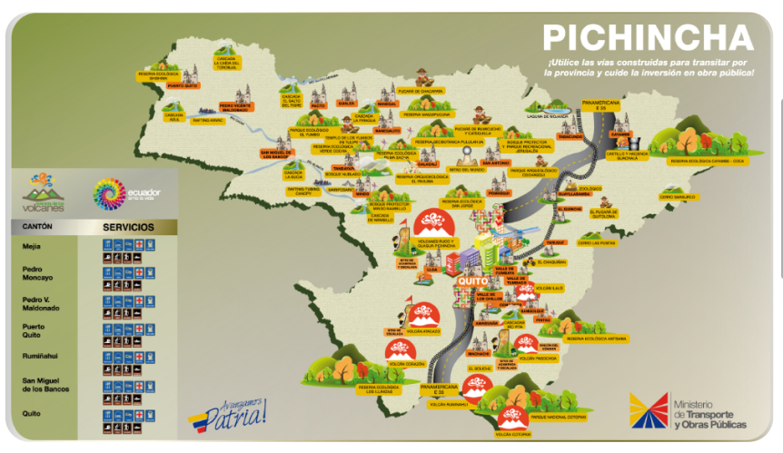
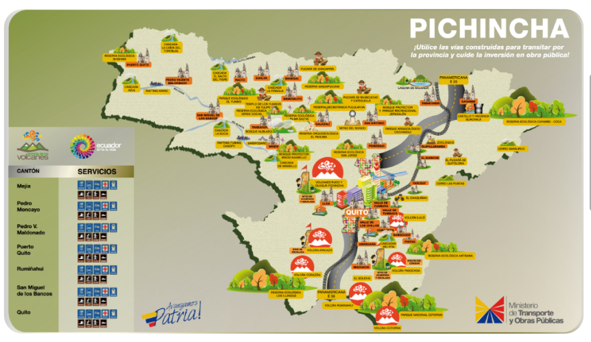

Explora rutas cercanas:
Rutas turísticas de Pichincha. Disfruta de la cultura, naturaleza, e historia que tiene Pichincha
Rutas turísticas de Pichincha. Disfruta de la cultura, naturaleza, e historia que tiene Pichincha
Si buscas vivir aventuras únicas en un solo lugar, tenemos justo lo que necesitas. En nuestro destino, podrás disfrutar de diversas actividades que te harán sentir lleno de emoción y adrenalina. Desde deportes extremos hasta expediciones en la naturaleza, tenemos todo lo que necesitas para vivir una experiencia inolvidable. Además, contamos con alojamiento y servicios de calidad para que tu estadía sea cómoda y placentera. ¡Ven y vive la aventura de tu vida en nuestro destino!
| Cantón | Servicios |
|---|---|
| Quito | Senderismo Ciclismo Parapente |
| Mejía | Senderismo Ciclismo Camping |
| Pedro Moncayo | Senderismo Ciclismo Observación de aves |
| Cayambe | Senderismo Ciclismo Escalada |
| Rumiñahui | Senderismo Ciclismo Cabalgatas |
| San Miguel de los Bancos | Senderismo Ciclismo Canyoning |
| Pedro Vicente Maldonado | Senderismo Ciclismo Rafting |
| Puerto Quito | Senderismo Ciclismo Pesca deportiva |
Descubre la naturaleza en su máxima expresión en los cantones de Pichincha.